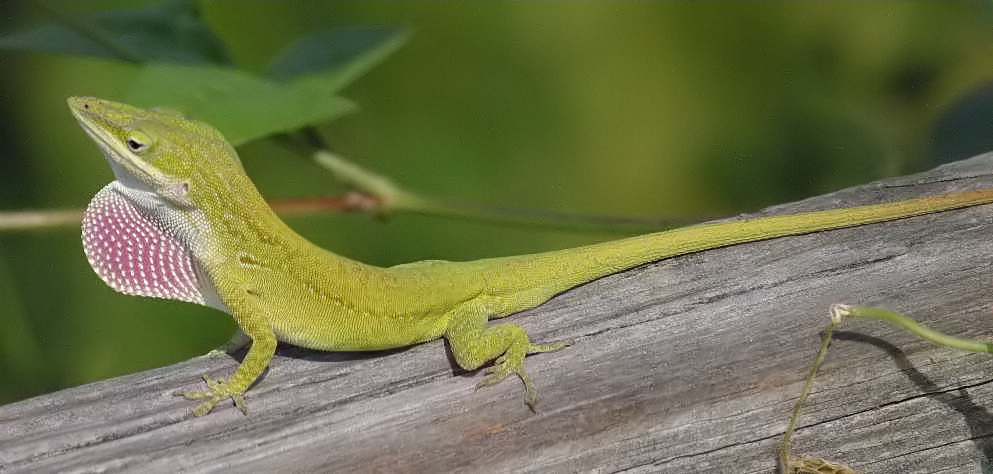

The common basilisk has many natural predators: large reptiles, birds, and some mammals. To avoid predators, it can conceal itself under leaves on the forest floor and can remain motionless for a long time. When the common basilisk must flee, though, its skill of running on water can help it avoid many predators, and when the common basilisk can no longer run on the water, it will use its strong swimming capabilities to continue underwater.
